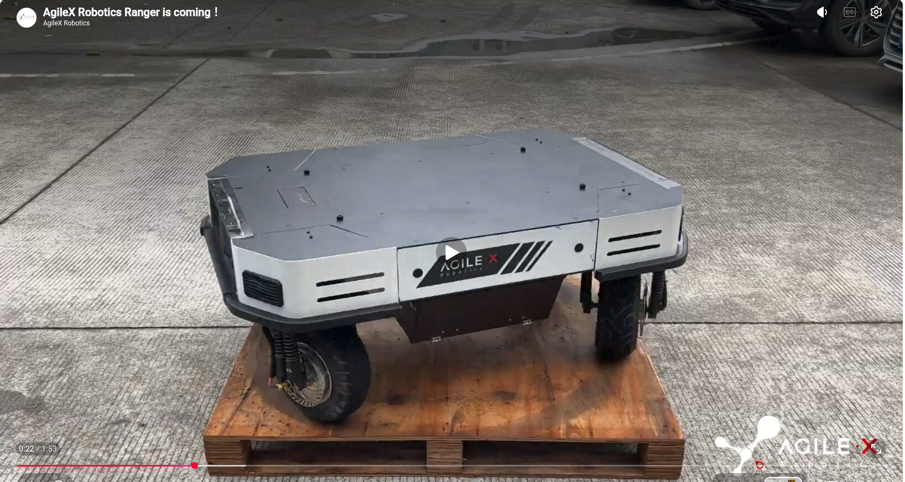
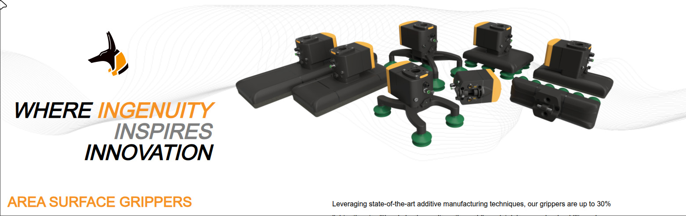

← R&D index
Company Learnings · Conference Prep
World Robot Conference 2026
Beiren Etrong International Convention & Exhibition Center, Beijing E-Town · Aug 19–23, 2026 · 09:00–17:00 · Exhibitor data scraped from worldrobotconference.com on Aug 19 · Working doc for Jasper & William — leave comments under each item.
TL;DR
All 313 exhibitors scraped and classified against our four targets (AMR to mount an arm on, grippers, sensors/cameras, modular conveyors). There is no standalone conference app — tickets and navigation run through WeChat. The best days for vendor talks are Wed Aug 20 (Procurement Day) and Thu Aug 21 (Developer Day); the weekend is public days and will be mobbed.
- AMRs: strong field — AgileX D306, SLAMTEC B322, SEER C233, STEP A101 all sell chassis-as-platform.
- Grippers: Hall B is the densest dexterous-hand cluster anywhere; for industrial EOAT: DH Robotics B418, SMC B111.
- Sensors: ORBBEC / RealSense / Hesai / Livox all present; a full row of 6-axis F/T vendors; tactile skin is the breakout category this year.
- Conveyors: none. Zero modular-conveyor vendors at WRC. Closest: SENAD A301 autonomous truck/container unloading — directly on our container-unload topic. For real conveyors: CeMAT Asia, Shanghai, autumn.
Action items
- Show the two procurement photos below at every relevant booth; collect WeChat + card + quote per vendor.
- Omni base: get quotes vs the spec sheet (250 kg / 15° / 24 V / CAN-or-Ethernet / true omni / no sensors / open stack).
- Area gripper: SMC B111 is the one realistic booth — compare against the Hanhua/Wantai China-sourcing quotes already in flight.
- Ask SENAD A301 what vacuum heads + base they use on iLoabot-M.
- Leave findings as comments under each procurement item so we both see them same-day.
Practical — tickets, entry, app situation
Procurement wishlist — show these photos at the booth

Omnidirectional mobile base
Reference photo: AgileX "Ranger" class, 4-wheel independent steer/drive. We want the platform bare — we mount our own arm, sensors and control stack on top.
| Requirement | Target |
|---|
| Payload | > 250 kg |
| Slope / ramp | Climbs a ramp up to 15° at working payload (ask: hill-hold / brake behaviour on the ramp) |
| Power out | Battery delivers a 24 V rail to power our top-mounted equipment |
| Interface | Ethernet or CAN bus, documented protocol — we run our own external control loop |
| Drive | True omnidirectional (4WS/swerve, mecanum, or omni wheels) — no Ackermann |
| Sensors | None. Bare platform — no lidar/camera bundle, we bring our own |
| Software | Open stack — ROS 2 driver or documented low-level API, no cloud lock-in |
Where to ask (in priority order):
- D306 AgileX 松灵 — the pictured Ranger is theirs (4WS omni). Ranger itself is likely under 250 kg payload — ask which model in the family (UMR line) hits 250 kg + 15°, bare, CAN-documented.
- A422 Manda 山东曼大 — WL100 4WS/4WD chassis with lateral/diagonal/pivot modes, CAN + VCU, explicitly built for secondary development. Payload not published — ask.
- C233 SEER 仙工 — P-series carries 300–1500 kg, but check drive type: pallet AMRs are often differential, not omni.
- A101 STEP 新时达 — IB2-150 is an open carrier chassis but 150 kg → under spec; ask about a heavier variant.
- D207 Jichuang 极创 · D311 Yuhesen 煜禾森 — UGV chassis houses with custom configs; ask for omni + 250 kg.
- B322 SLAMTEC 思岚 — Poseidon 4WS omni / Hermes arm-carrier; likely lighter class, price anchor.
- C115 Zhidongli drive-by-wire chassis · C116 Lvkong s30 (70 kg — under spec, cheap dev option) · A435 RobStride 悟时 omni (100 kg — under spec).
Reality check: 250 kg + 15° + true omni is a demanding combo (wheel torque and hill-hold get expensive). If nobody stocks it, the fallback question is "which chassis do you customize, at what NRE and lead time?"

Area surface vacuum gripper (foam, check-valved)
Reference photo: 3D-printed area surface gripper family (Anubis 3D). Desired specs come from our vacuum research — see
field guide §8.7/§9.2 and the
China sourcing doc (Hanhua/Wantai inquiries already drafted).
| Requirement | Target |
|---|
| Type | Foam-mat area gripper bar (Schmalz FXP/FMP pattern) for corrugated cartons |
| Hole tolerance | Per-cell self-closing check valves — uncovered cells must not kill the vacuum |
| Vacuum source | External-vacuum version (not integrated ejector) — must run on ejector, dry-vane pump and blower |
| Size | ~130 mm wide bars; lengths ≈ 640 mm and 1000 mm (current pads are 140×340) |
| Working point | −20…−40 kPa on porous corrugate; ≈ 2,200 N at −25 kPa over 0.09 m² engaged foam |
| Ports | G1/4 fine for pump/ejector duty; ask for a large-bore (DN60-class) version for blower flow |
| Consumables | Spare foam plates orderable — foam is a wear item; blow-off pulse supported (cleans valves) |
| Budget anchor | $250–450 per bar at CN pricing (EU list for the Schmalz/Coval basket is 5–10×) |
Where to ask:
- B111 SMC — the one realistic booth: ZGS sponge vacuum gripping units (up to 2,144 N, single cable + air line, cobot-ready plates) + MA tool changers. Ask about check-valve behaviour on holes and external-vacuum variants.
- A301 SENAD 赛那德 — not a vendor of grippers, but their iLoabot-M unloads box + bag freight all day; ask what heads/vacuum source they run and who supplies them.
- B109 Yaskawa Shougang — 1,700 parcels/h sorting cells; same question, their EOAT supplier.
- D401 CRG 希瑞格 — EOAT components + tool changers; ask if they carry foam area bars or only cups.
- B418 DH Robotics — electric-gripper alternative path, not vacuum, but collect the catalog anyway.
Expectation: WRC is a robot fair, not a pneumatics fair — Schmalz/Piab/Coval-class area grippers will be thin on the ground. Treat the booth visits as validation + supplier discovery; the Hanhua HVGP130 (640/1000, V check valve, E external-vacuum) quote from the sourcing doc remains the primary path.
Top 10 — if time is short
Targets by category — full scraped lists
1 · AMR / mobile bases
Tier 1 = sells the bare chassis/platform. Tier 2 = composite mobile manipulators & payload-friendly quadrupeds.
- D306 AgileX 松灵 — UMR industrial 4WD/4WS base, IP-rated, open ROS ecosystem, PiPER arms pitched for mobile integration.
- B322 SLAMTEC 思岚 — Hermes 48 V universal chassis sized for single/dual-arm mounting; Poseidon 4WS omni; ROS/ROS2 SDK.
- C233 SEER 仙工 — P300/P1500 AMRs with configurable top modules; #1 robot-controller market share.
- A101 STEP 新时达 — IB2S/IB2-150 open carrier chassis, 150 kg, 24/7 hot-swap batteries, sold to third parties as humanoid carrier.
- A422 Manda 山东曼大 — WL100 4WS/4WD chassis (lateral/diagonal/pivot), CAN + VCU for secondary dev; tracked D100; AMR wheel modules.
- A410 Lingyi iTech 领益 — "universal humanoid mobile base" product (610×470×330 std + Pro) + ODM.
- D207 Jichuang 极创 — 30+ UGV chassis models, 3,000+ units to 700+ teams (Komodo tracked, Warthog 4WD).
- D311 Yuhesen 煜禾森 — 10+ yrs modular indoor/outdoor drive-by-wire chassis; direct AgileX competitor.
- C115 Zhidongli 智动力 — drive-by-wire chassis + force-controlled 7-DOF dual arms, ROS/Python/C++ SDK (Hubei shared booth).
- C116 Lvkong 绿控 — cheap s30 wheeled (70 kg, IP55) + D100 tracked, mounting interfaces, "can mount arms" (Chengdu shared booth).
- D302 Uniubi 宇泛 — 灵猫 open-API chassis, Orin onboard, 15 kg payload, developer-pitched.
Tier 2 — composites: A106 QiZhi/EFORT production-validated composite, open Openmind OS · C305 Lumos MOS2 (30–50 kg dual-arm, FastUMI-compatible) · C315 CASBOT W2 (chassis/EOAT/compute/sensors all swappable) · C210 Galaxea R1 (researcher-oriented) · C119 Dobot Atom-W · A428 Tianlian · C131 CRP · B222 Neuromeka mobile welding. Quadrupeds with real payload interfaces: A211 CVTE MAXHUB X7 (rails + open HTTP/WS API, 40 kg) · C215 Unitree AS2 (explicitly supports a 7-axis arm, 65 kg) · A113 Direct Drive Tech TITA (wheel-leg, full SDK).
2 · Grippers / end-effectors
Industrial EOAT first; then the dexterous-hand cluster (Hall B is the world's densest right now).
- B418 DH Robotics 大寰 — AG 2-finger electric, PGT vision-tactile (±0.02 mm), 3- and 5-finger hands.
- B111 SMC — ZGS sponge-vacuum units pre-integrated for UR/FANUC/Techman; MA tool changers.
- A303 LEADERDRIVE 绿的谐波 — AIX2 electric grippers, custom stroke/force/fingers, tactile + camera modules.
- D401 CRG 希瑞格 — tool changers (air/electric/signal pass-through), vacuum + gripper components.
- B412 OYMotion 傲意 — direct-drive force-controlled 3-jaw gripper with swappable tactile tips (+ ROHand).
- B422 MISUMI — commodity electric grippers, fast sourcing.
Dexterous hands: B405 Inspire RH56 (most deployed) · B205 LinkerBot (widest matrix) · B415 DexRobot DexHand021 + budget 3-finger · B403 ZHAOWEI B21 (21 DOF, 700 g, 1M cycles) · B406 BrainCo Revo 2 (383 g) · B421 CASIA Hand · B207 Xynova Flex 2 · A413 Leadshine DH116 (tactile, open SDK) · A326 Zhixingjian 智行腱 tendon-drive (1/3 weight) · A315 Vizum ViHero (vision fiducials) · C301 SynapX 章鱼灵动 (21+ DOF, 1,900 tactile units) · C130 Yuequan 月泉 (artificial-muscle hands) · D404 Zhixing 知行 (L/R self-adaptive + tactile data hand).
3 · Sensors / cameras
Cameras and lidar for the base; F/T and tactile for the arm/gripper.
3D cameras: B313 ORBBEC Gemini 330 (AI depth completion) · B209 RealSense D585 (120° FOV, GMSL) · A107 Motic line-laser 3D for arm mounting · C115 Lingtu 灵途 solid-state near-field 3D for wrists/hands · D502 Tensopt all-conditions RGB+depth (CAS optics spin-out).
Lidar: B305 Hesai JT mini hemispherical · A506 Livox Mid-360S/L (the default AMR lidar) · B323 ZVISION NZ1 (240°×80° SPAD, robot pricing) · B322 SLAMTEC RPLIDAR + Aurora VSLAM module · C115 Vanjee 万集 lidar-camera fused units.
Force/torque: B315 SRI 宇立 (deepest catalog, 9.2 mm thin) · B306 KUNWEI 坤维 (<0.1% FS) · B307 KELI 柯力 · B326 AVIC ZEMIC · B316 XJC 鑫精诚 (sub-10 mm fingertip F/T) · B308 Blue Point 蓝点 (supplies Unitree/UBTECH) · D508 Lisheng 力晟 · B411 MinebeaMitsumi (3 g MEMS 6-axis) · C115 Kaite 开特 (automotive grade).
Tactile (breakout category): B203 PaXini 帕西尼 · B218 Tashan 他山 (event-driven tactile chip E10A) · B225 XELA (uSkin) · B329 TY Sensor 探源 (calibration-free 3-axis chips) · B426 Huaweike 华威科 (drop-in gripper-jaw tactile, UART/I2C/SPI) · A107 Xense 千觉 (micron-res visuotactile + LeRobot-compatible XTac UMI gripper) · A107 Moxian 墨现 e-skin · D506 Jingzhigan 晶智感 (1,400+ taxel palms, UMI module) · D507 Tujian 途见 stretchable e-skin · C115 LatentSpace 潜空间 LS-Tac see-through visuotactile.
4 · Conveyors / logistics
Managed expectations: zero modular-conveyor vendors at WRC 2026. These are the closest matches.
- A301 SENAD 赛那德 — autonomous truck/container loading & unloading. Top priority for us.
- B109 Yaskawa Shougang — AI-vision parcel sorting cells fed by conveyor lines (1,700 pcs/h).
- D112 Reconova 瑞为 — airport luggage identify-grasp-carry-load robots.
- C233 SEER 仙工 — pallet-AMR fleets as the conveyor alternative.
For actual modular conveyors → CeMAT Asia / LogiMAT China, Shanghai, autumn. WRC is robots, not intralogistics.
Bonus — worth a detour
- C132 Huiwen 慧闻 — 7-DOF force-feedback teleop master + open-source bilateral dual-arm rig. Directly relevant to our teleop work.
- B415 DexRobot DexCap — 65-DOF wearable whole-body teleop suit.
- C301 SynapX Ego — EMG wristband + tactile glove + headband data capture.
- D504 Qingzhuo 清卓 — hydraulic-electric hybrid heavy humanoid, 500 kgf grip, launching at the show.
- A416 Shihe 史河 — magnetic wall-climbing dual-arm robot with VR teleop (ship hulls).
- D505 Damiao 达妙 — DJI-alumni cheap MIT-mode CAN joint motors (up to 400 Nm peak).
- C121 Lightwheel 光轮 — real-to-sim + physics-accurate cloud benchmarks (Hardware-CI angle).
- A215 ECOVACS 八界 — fully open ROS2 home-robot dev platform (36 atomic skills, PCIe for local 7B models).
- B408 Hanwei 汉威 — robot e-nose, 100+ gases.
Day plan
Day 1 · Wed Aug 20 · Procurement Day — staff expect buying conversations
Morning: Hall B (component hall, highest target density)
B111 SMC → B205 LinkerBot → B209 RealSense → B203 PaXini → B305 Hesai → B313 ORBBEC → B306/B307/B308/B315/B316 F/T row → B322 SLAMTEC → B323 ZVISION → B405 Inspire → B412 OYMotion → B415 DexRobot → B418 DH Robotics
Afternoon: Hall A
A101 STEP → A107 shared booth (Xense, Moxian, Motic) → A301 SENAD (30+ min) → A303 LEADERDRIVE → A310 MOONS' → A410/A413/A422 → A506 Livox
Day 2 · Thu Aug 21 · Developer Day — best day for SDK/API-openness questions
Morning: Hall D
D306 AgileX (30+ min) → D207 Jichuang → D311 Yuhesen → D302 Uniubi → D404 Zhixing → D401 CRG cluster → D502 Tensopt → D506/D507/D508 sensor row → D504 Qingzhuo launch → D505 Damiao
Afternoon: Hall C
C233 SEER → C115 Hubei pavilion (Vanjee, Lingtu, LatentSpace, Kaite, Zhidongli) → C116 Lvkong → C301 SynapX → C130 Yuequan → C132 Huiwen → C305 Lumos → C210 Galaxea → C215 Unitree
Aug 22–23 (public days): spillover + demos only; too crowded for serious talks.
Recommendations
- Omni base: get a written quote from AgileX D306 and Manda A422 against the spec table above — they're the two most likely to hit 250 kg + true omni + documented CAN. Treat SEER C233 as the industrial fallback if we can accept non-omni drive.
- Gripper: don't expect to buy the area gripper at WRC — validate specs at SMC B111, interrogate SENAD A301 about their unloading heads, and keep the Hanhua HVGP130 (640 + 1000, V-valve, external-vacuum) inquiry as the buying path.
- Sensors: best value-per-minute is the Hall B F/T row (B305–B326) — one aisle, six vendors, directly comparable quotes. For the container-unload cell, also price ORBBEC Gemini 330 vs RealSense D585 side by side.
- Conveyor: deprioritize at this fair; book CeMAT Asia (Shanghai) instead and spend the freed time on SENAD + the teleop bonus booths.
Floor plans
{kind=link}
{kind=link}
{kind=link}
{kind=link}
{kind=link}
{kind=link}